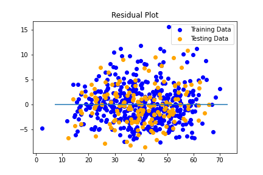

2021 Season Predictions
Multiple Linear Regression
Main Idea
Utilizing Multiple linear Regression models, we set out to attempt to predict the final outcome of the 2021 using current team statistics from the halfway point in the 2021 NBA Season.
Data
Source
Data was collected from https://www.basketball-reference.com. Using their "Team Ratings" tables we could use these metrics to help determine team skill and their impacts on win counts
- Adjusted Margin of Victory (MOV/A)
- Average difference between team points scored and team points allowed, adjusted for strength of schedule
- Adjusted Offensive Rating (ORtg/A)
- An estimate of points scored per 100 possessions, adjusted for strength of schedule
- Adjusted Defensive Rating (DRtg/A)
- An estimate of points allowed per 100 possessions, adjusted for strength of schedule
- Adjusted Net Rating (NRtg/A)
- A net aggregate of a teams ORtg/A and DRtg/A
The adjusted metrics were used as we felt it better reflected a teams's true points value, and would help create a more accurate prediction based on a teams conference or division

Training Data
Data from the 2000 NBA season to the 2020 NBA season were collected and combined for model training. Our process included using past seasons metric ratings and the corresponding wins to train the model to help accuratly predict wins from 2021's current metrics
Multiple Regression models allow us to track the linear path of multiple X values, in this case our four main ranking metrics provided by https://www.basketball-reference.com. Our Y output would be trained by past seasons total wins, and would be the predictive variable when inputing 2021 data.
Using Scikit-Learns' internal scoring methods, our training data returned a P-Value of .910 along with a testing score of .908. These scores demonstrate a strong correlation between our metrics and wins. This means our possible predictions should statisically be accurate.
Predictions
Utilizing Scikits prediction tools, we could use our current 2021 Data and plug the information into our trained linear regression model to receive a predicted final standings for the 2021 season
the raw predictions were listed and sorted into predictions_df, which was then formatted into a digestable table to see exactly how many wins were given to each team.
| Team | Predicted Wins |
| Utah Jazz | 67 |
| Milwaukee Bucks | 58 |
| Phoenix Suns | 55 |
| Los Angeles Clippers | 54 |
| Los Angeles Lakers | 53 |
| Brooklyn Nets | 50 |
| Denver Nuggets | 50 |
| Philadelphia 76ers | 46 |
| Toronto Raptors | 45 |
| Golden State Warriors | 43 |
| Indiana Pacers | 42 |
| Boston Celtics | 41 |
| Dallas Mavericks | 40 |
| Memphis Grizzlies | 41 |
| Atlanta Hawks | 40 |
| New Orleans Pelicans | 40 |
| New York Knicks | 40 |
| San Antonio Spurs | 37 |
| Miami Heat | 37 |
| Charlotte Hornets | 37 |
| Chicago Bulls | 37 |
| Portland Trail Blazers | 35 |
| Detroit Pistons | 30 |
| Washington Wizards | 27 |
| Sacramento Kings | 26 |
| Oklahoma City Thunder | 26 |
| Houston Rockets | 25 |
| Orlando Magic | 20 |
| Cleveland Cavaliers | 20 |
| Minnesota Timberwolves | 19 |
Analysis
Until the season concludes, we wont know for sure just how accurate we are; However, with near 1 R-Squared values we can trust this regression in a statistical manner to continue our predictions into the playoffs.
An Interesting perspective the regression shows is the change in standings from the halfway point in the season to the predicted finals. The metrics used did infact show some teams may have been playing better than their win/loss numbers have so far shown, as well as the inverse.

We can see teams such as the Milwaukee Bucks who sit with 21 current wins, good enough for 7th overall currently, are predicted to finish with the second most wins by the end of the season along with the regular season Eastern Conference Title.
On the opposite end, the Portland Trailblazers with a respectable 18 wins, sitting 11th place overall, have been predicted to fall all the way to 20th in the overall standings with only 35 wins.
Playoff Implications
The top eight teams from each conference are awarded bids to the NBA playoffs, using our predictions we can create our predictive bracket and seed the teams based on record. We go in-depth into the playoff predictions in the next section.